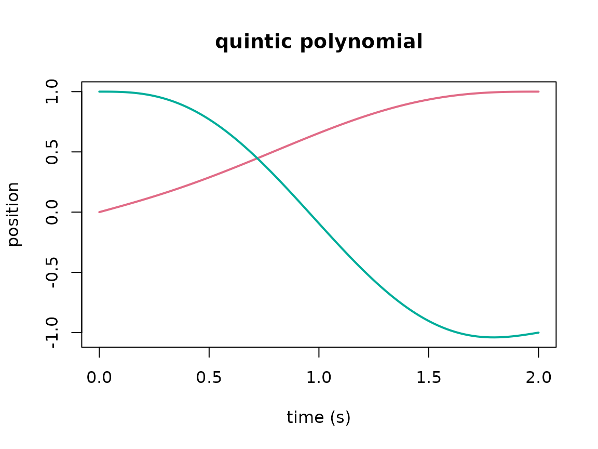
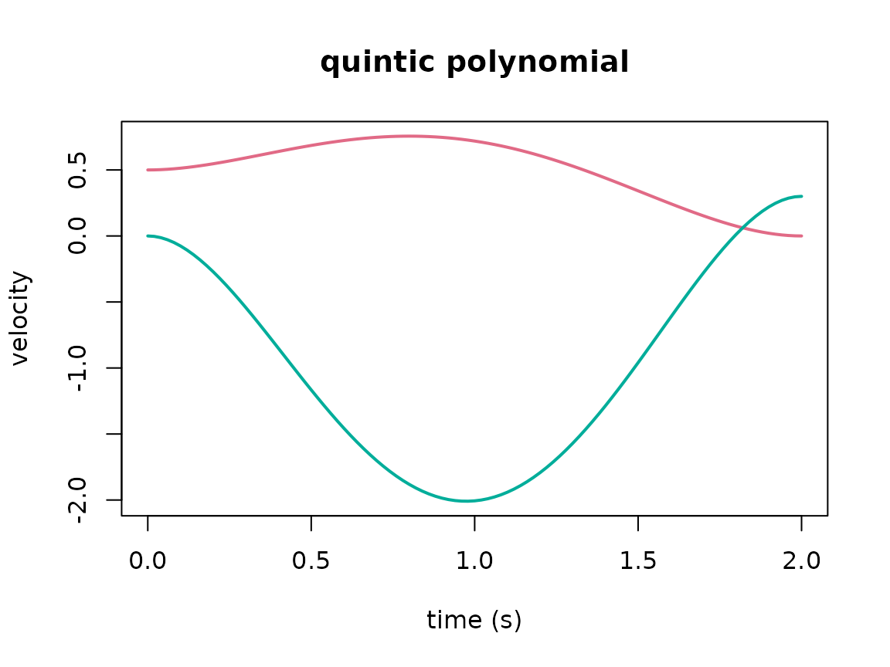
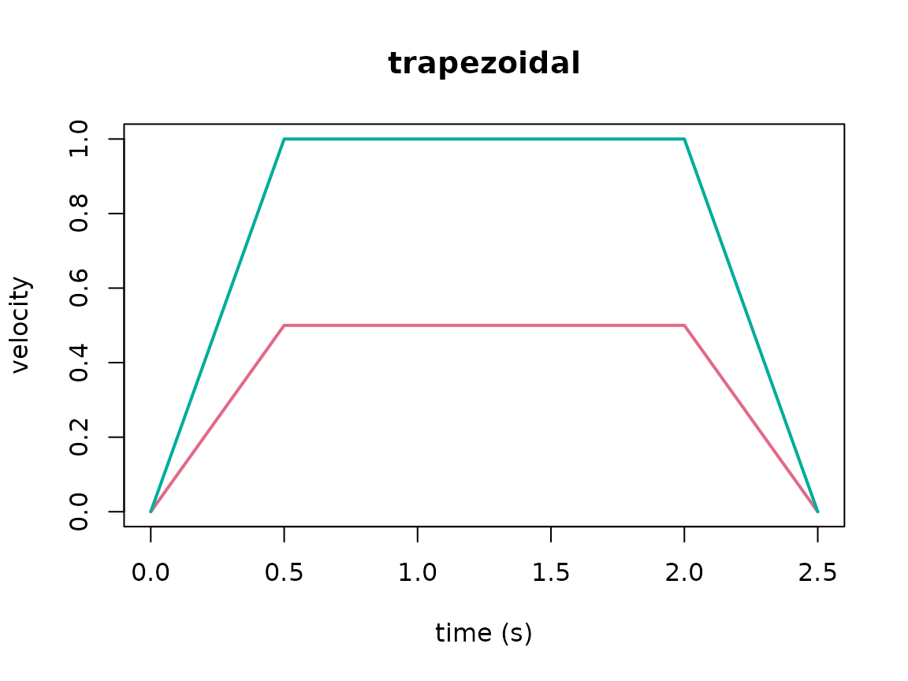

A path is a geometric curve; a trajectory adds timing. robotcompR
returns trajectories as robot_trajectory objects with
sampled time, q, qd and
qdd, and (for analytic profiles) an evaluate()
closure for exact values at any time.
Polynomial point to point motion
A quintic matches position, velocity and acceleration at both ends. With zero boundary velocity and acceleration, the normalized profile is the familiar s(\tau) = 10\tau^3 - 15\tau^4 + 6\tau^5.
tr <- robot_traj_polynomial(q0 = c(0, 1), q1 = c(1, -1), duration = 2,
qd0 = c(0.5, 0), qd1 = c(0, 0.3))
tr
#> <robot_trajectory> quintic polynomial: 101 samples of 2 coordinates over [0, 2] s
#> peak |velocity|: 0.756, 2.009
e <- tr$evaluate(c(0, 2))
e$q
#> [,1] [,2]
#> [1,] 0 1
#> [2,] 1 -1
e$qd
#> [,1] [,2]
#> [1,] 0.5 0.0
#> [2,] 0.0 0.3
plot(tr, "q")
plot(tr, "qd")
The cubic option matches only position and velocity, so its acceleration jumps at the endpoints. Outside [0, T] the trajectory is held at rest at its endpoint positions.
Trapezoidal velocity profiles
robot_traj_trapezoidal() accelerates at
amax, cruises at vmax and decelerates. All
joints share one time scaling, so joint space motion is a straight line
and the slowest joint sets the duration:
T = \frac{\Delta}{v_{\max}} + \frac{v_{\max}}{a_{\max}} \quad\text{when}\quad \Delta \ge \frac{v_{\max}^2}{a_{\max}}, \qquad T = 2\sqrt{\Delta / a_{\max}} \quad\text{otherwise}.
tz <- robot_traj_trapezoidal(c(0, 0), c(1, 2), vmax = 1, amax = 2)
tz$duration
#> [1] 2.5
apply(abs(tz$qd), 2, max)
#> [1] 0.5 1.0
plot(tz, "qd")
Multi-waypoint paths
robot_traj_path() times a polyline (for example a
planner output) as a sequence of rest to rest trapezoidal segments. This
is conservative but always respects the limits and never overshoots a
waypoint.
path <- rbind(c(0, 0), c(1, 0), c(1, 1), c(0.2, 1.4))
tp <- robot_traj_path(path, vmax = 1, amax = 2, dt = 0.01)
tp$duration
#> [1] 4.3
plot(tp$q[, 1], tp$q[, 2], type = "l", asp = 1, xlab = "q1", ylab = "q2")
points(path, pch = 19, col = "firebrick")
Checking a trajectory against a robot
arm <- robot_example("planar2")
robot_traj_check(arm, tp)$ok
#> [1] TRUE
bad <- robot_traj_polynomial(c(0, 0), c(4, 0), 1)
chk <- robot_traj_check(arm, bad)
chk$ok
#> [1] FALSE
head(chk$violations)
#> quantity time joint value
#> 1 position 0.67 joint1 3.180148
#> 2 position 0.68 joint1 3.237895
#> 3 position 0.69 joint1 3.293763
#> 4 position 0.70 joint1 3.347680
#> 5 position 0.71 joint1 3.399582
#> 6 position 0.72 joint1 3.449409Cartesian motion
robot_traj_cartesian() moves the end effector along a
straight line with a quintic time scaling, interpolating orientation by
slerp. Combine it with inverse kinematics, seeding each solve with the
previous solution:
from <- robot_pose(translation = c(1.5, 0.3, 0))
to <- robot_pose(translation = c(0.8, 1.2, 0))
ct <- robot_traj_cartesian(from, to, duration = 2, n = 21)
q <- c(0.3, -0.8)
Q <- matrix(NA, length(ct$poses), 2)
for (i in seq_along(ct$poses)) {
q <- robot_ik(arm, ct$poses[[i]], initial = q, weights = c(1, 1, 0, 0, 0, 0))$q
Q[i, ] <- q
}
P <- robot_fk_positions(arm, Q)
plot(P[, 1], P[, 2], type = "b", asp = 1, xlab = "x (m)", ylab = "y (m)")